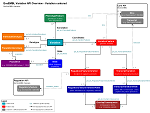
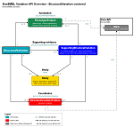

A comprehensive Perl Application Programme Interface (API) provides efficient access to the Ensembl Variation database.
See below links to some overviews of the Variation API to illustrate what data/objects you can fetch from the classes:
| Variation | StructuralVariation | |
|---|---|---|
|  |  |
Note: not all the objects of the Ensembl Variation API are represented in these diagrams. They are only overviews to help you to understand the main classes in Ensembl Variation API.
Ensembl is an open project and we would like to encourage correspondence and discussions on any subject on any aspect of Ensembl. Please see the Ensembl Contacts page for suitable options getting in touch with us.